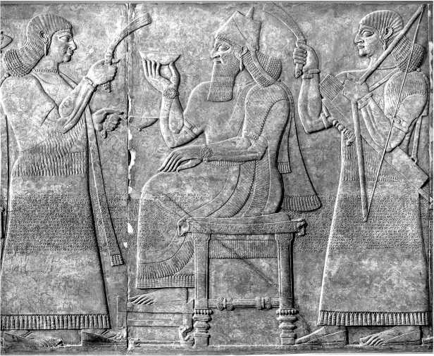
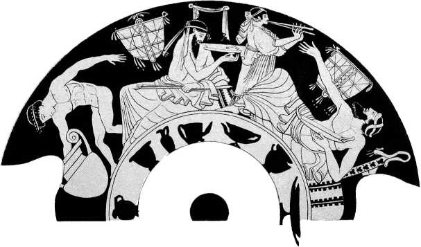
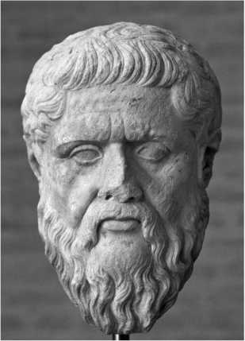

История в бокалах . Очарование вина.


Быстро принесите мне стакан вина, чтобы я мог смочить мозги и сказать что-то умное.
Великий праздник
Один из величайших праздников в истории устроил ассирийский царь Ашшурнасирпал II около 870 года до н. э., чтобы отметить завершение строительства своей новой столицы в Нимруде. В большом дворце, построенном на высокой глинобитной платформе в традиционной месопотамской манере, было семь великолепных залов с деревянными и бронзовыми вратами под крышами из кедра, кипариса и можжевельника. Искусные фрески на стенах и потолке рассказывали о военных подвигах царя в дальних странах. Дворец был окружен каналами, водопадами и садами, в которых росли как местные, так и привезенные из военных походов растения. Финиковые пальмы, кедры, кипарисы, оливковые, сливовые и фиговые деревья и виноградные лозы «соперничали друг с другом ароматом», свидетельствуют найденные археологами глиняные таблички. Жителями новой столицы стали люди из разных уголков империи, которая занимала большую часть Северной Месопотамии. Своим поистине космическим видовым разнообразием столица напоминала микровселенную.
Пиршество продолжалось десять дней. Официальная запись свидетельствует, что в торжестве приняли участие 69 574 человек: 47 074 мужчин и женщин со всей империи, 16 тысяч новых жителей Нимруда, 5 тысяч иностранных сановников из других государств и 1500 дворцовых чиновников. Целью столь грандиозного банкета была демонстрация могущества и богатства царя, как своему народу, так и иностранным гостям. Для праздника приготовили 1000 голов крупного рогатого скота, 1000 телят, 10 тысяч овец, 15 тысяч ягнят, 1000 «весенних» ягнят, 500 газелей, 1000 уток, 1000 гусей, 20 тысяч голубей, 12 тысяч других мелких птиц, 10 тысяч рыб, 10 тысяч тушканчиков и 10 тысяч яиц. Овощей было немного – всего 1000 ящиков. Но даже допуская некоторое преувеличение, можно сказать, что это был праздник эпического масштаба. Царь «одарил своих гостей почестями и отправил их в свои страны здоровыми и счастливыми».
Но самым впечатляющим был выбор напитка для пира. Несмотря на свое месопотамское происхождение, Ашшурнасирпал для своего праздника выбрал не пиво, традиционный напиток этого региона. Резные рельефы на стенах дворца запечатлели, как он элегантно, кончиками пальцев правой руки, держит небольшую, вероятно сделанную из золота, чашу с вином.
Пиво на банкете тоже подавали – было выпито 10 тысяч кувшинов пива и 10 тысяч бурдюков вина.

Ашшурнасирпал II изображен на троне с небольшой винной чашей в руке. Слуги опахалами отгоняют мух от драгоценной влаги
Количество равное, но цена напитков несопоставима. Раньше вино было в Месопотамии большой редкостью и стоило по крайней мере в десять раз дороже пива, поскольку привозили его из горных винодельческих регионов на северо-востоке. Соответственно, только элита могла позволить себе этот экзотический напиток, в основном его использовали в религиозных обрядах.
Дефицит и высокая цена сделали вино поистине «божественным напитком», и большинство людей никогда его не пробовали. Таким образом, способность Ашшурнасирпала напоить вином и пивом 70 тысяч гостей была безусловным доказательством его богатства и могущества. Не менее впечатляющим был тот факт, что подавали как вина, привезенные из отдаленных регионов империи, так и сделанные из винограда, выращенного в царском саду.
Виноградные лозы оплетали деревья, как это было принято в то время, и орошались сложной системой каналов. Ашшурнасирпал был не просто сказочно богат, его богатство буквально росло на деревьях. Преданность нового города богам была официально подтверждена ритуальным подношением местного вина из местных лоз.
Другие изображения праздничных сцен из Нимруда показывают, что гости пьют вино из неглубоких чаш, сидя на деревянных диванах. Окружающие их слуги либо держат кувшины с вином, либо опахалами отгоняют насекомых. На некоторых фресках изображены большие сосуды для хранения вина, из которых слуги пополняют сервировочные кувшины.
Ассирийцы превратили винопитие в сложный социальный ритуал. На рельефе 825 года до н. э. изображен Салманасар III, сын Ашшурнасирпала. В правой руке он держит винный кувшин, левая рука лежит на рукоятке меча, у его ног – коленопреклоненный проситель. Благодаря такого рода пропаганде вино и все, что с ним связано, стали символом власти, процветания и привилегий.
«Отличное пиво гор»
Вино стало новым модным трендом, но само по себе не было новинкой. Как и в случае с пивом, история его изобретения или открытия отражена лишь в мифах и легендах. Археологические данные свидетельствуют о том, что вино было впервые произведено в период неолита, между 9000 и 4000 годом до н. э., в Загросских горах, предположительно на территории современной Армении и Северного Ирана. Совпадение трех факторов сделало возможным развитие виноделия в этой области: наличие дикой евразийской виноградной лозы (vitis vinijera sylvestris\ доступность зерновых культур, что позволяло обеспечивать запасы продовольствия для винодельческих общин, и изобретение керамики около 6000 года до н. э.
Производят вино из ферментированного сока измельченного винограда. Природные дрожжи, присутствующие на поверхности ягод, превращают сахар в соке в спирт. Поэтому длительное хранение винограда или виноградного сока в керамических сосудах неизбежно превращало сок в вино. Самые ранние вещественные доказательства этого, в виде красноватого осадка внутри керамического сосуда, были найдены при раскопках Хаджи Фируза, неолитической деревни в Загросских горах. Кувшин датирован 5400 годом до н. э. Вероятное происхождение вина в этом регионе отражено в библейской истории Ноя, который, как говорят, высадил первый виноградник на склонах горы Арарат.
Отсюда знание о виноделии распространилось на запад, в Грецию и Анатолию (современная Турция) и на юг, через Левант (современные Сирия, Ливан и Израиль) в Египет. Примерно в 3150 году до н. э. один из самых ранних правителей Египта, фараон Скорпион I, был похоронен с семью сотнями кувшинов вина, привезенных за большие деньги из Южного Леванта, важного винодельческого района того времени. Когда фараоны приобщились к вину, они заложили собственные виноградники в дельте Нила, и небольшое внутреннее производство вина продолжалось там примерно до 3000 года до н. э. Однако, как и в Месопотамии, потребление вина было привилегией элиты, поскольку климат не способствовал крупномасштабному производству. Картины, изображающие производство вина, нередко встречаются в захоронениях, но они дают неверное представление о его распространенности в египетском обществе, поскольку только богатые (а лишь они пили вино) могли позволить себе дорогие усыпальницы. Простые египтяне потребляли пиво.
Аналогичная ситуация сложилась в Восточном Средиземноморье. Виноградную лозу выращивали примерно с 2500 года до н. э. на Крите и, возможно, в материковой Греции. О том, что лоза была завезена, а не всегда там присутствовала, свидетельствуют более поздние греческие мифы, согласно которым боги пили нектар (предположительно медовый), а вино было подарено людям позднее. Виноградные лозы выращивали так же, как пшеницу и ячмень, нередко они оплетали оливковые или фиговые деревья. Однако в микенской и минойской культурах II тысячелетия до н. э., на греческом материке и на Крите соответственно, вино по-прежнему оставалось напитком элиты. Оно не упоминается в рационе рабов или служителей культа невысокого ранга. Доступ к вину был все еще признаком высокого статуса.
Положение изменилось во время правления Ашшурнасирпала и его сына Салманасара. Вино, как неотъемлемая часть религиозной и общественной жизни, становилось все более модным на Ближнем Востоке и в Восточном Средиземноморье. Этому способствовали рост его производства и экспорта, а также появление новых крупных государств и империй. Чем меньше границ пересекало вино, тем меньше налогов и сборов приходилось платить и тем дешевле обходилась его перевозка на большие расстояния. Больше всех «повезло» в этом смысле ассирийским царям, владевшим главными винодельческими регионами. Рост производства и снижение цен сделали вино доступным для широких масс. Если, согласно записям времен правления Ашшурнасирпала и Салманасара, дань, уплаченная ассирийскому суду, – это золото, серебро, лошади, крупный рогатый скот и вино, то спустя два столетия оно исчезает из списков. По крайней мере, в Ассирии его больше не считали дорогим или экзотическим продуктом для использования в качестве приношения.
Клиновидные таблички из Нимруда, датируемые 785 годом до н. э., показывают, что к этому времени в ассирийском царском дворце вино входило в рацион по крайней мере 6 тысяч человек. На десять мужчин приходилось по одному ка (около литра) в день. Квалифицированные работники получали больше, один ка делили на шестерых. Но всем в хозяйстве, от высоких чиновников до мальчиков-пастухов и помощников поваров, полагалась определенная норма.
Спрос на вино вырос и на юге Месопотамии, где местное производство было неэффективным. Такой скоропортящийся продукт было трудно перевозить по суше, поэтому была налажена транспортировка вина по Евфрату и Тигру на плотах и лодках из дерева и тростника. Греческий историк Геродот, посетивший регион около 430 года до н. э., описал лодки, используемые для перевозки товаров по реке в Вавилон, и отметил, что «их главный груз – это вино». По свидетельству Геродота, после того как суда сплавлялись вниз по течению и разгружались, они были почти бесполезны, учитывая сложность транспортировки. Их разбирали и продавали, как правило, только за десятую часть первоначальной стоимости. Эти неизбежные потери также повышали цену вина.
Поэтому хотя вино становилось все более модным в месопотамском обществе, оно никогда не было общедоступным за пределами винодельческих районов. О дороговизне вина для большинства людей можно судить по словам Набонида, последнего правителя нововавилонского царства, которое пало под ударами персов в 539 году до н. э. Набонид хвастался, что во время его царствования кувшин импортного вина (он называл его «отличное пиво гор, которого нет у моей страны») объемом 18 сил (около 18 литров или 24 современных винных бутылок) можно было купить за один шекель серебра. В то время это был минимальный заработок в месяц, а значит, ежедневное потребление вина могли себе позволить только богачи. Остальные довольствовались алкогольным напитком, приготовленным из сиропа фиников. В Южной Месопотамии широко культивировались финиковые пальмы, поэтому такое «вино» было немногим дороже пива. В течение I тысячелетия до н. э. даже любящие пиво месопотамцы отвернулись от него. Началась эра вина.
Колыбель западной мысли
Основы современной западной политики, философии, науки и права были заложены древнегреческими мыслителями в VI–V веках до н. э. Новый подход греков состоял в рациональном исследовании той или иной проблемы посредством состязательного обсуждения. Лучший способ оценить один набор идей – сверить его с другим набором идей. В политической сфере признания добивались те, кто в совершенстве владел искусством риторики. Философские школы рождались в дискуссиях об устройстве мира. Ученые выдвигали конкурирующие теории, объясняющие природные явления. Правоведы участвовали в создании состязательной правовой системы. Еще одна форма институционализированного соревнования – Олимпийские игры в Древней Греции. В основе современного западного образа жизни лежит тот же принцип упорядоченной конкуренции в торговле, науке и правовой системе.
Концепция разграничения западного и восточного мира также имеет греческие корни. Древняя Греция была свободным объединением городов, поселений и колоний, взаимоотношения между которыми – соперничество и кооперация – постоянно менялись. Но уже в VIII веке до н. э. наметилась четкая граница между грекоязычными народами и иностранцами, которых они называли варварами (Barbaros), то есть чужеземцами, говорившими на непонятном языке. В первую очередь это были персы на востоке, чья обширная империя охватывала Месопотамию, Сирию, Египет и Малую Азию (современная Турция). Сначала ведущие греческие города-государства, Афины и Спарта, объединились, чтобы противостоять персам, но позже Персия часто поддерживала как Спарту, так и Афины, когда они сражались друг с другом. В конце концов Александр Великий объединил греков и победил Персию в IV веке до н. э.
Идея цивилизованной конкуренции и предполагаемое превосходство Греции над азиатскими народами ярче всего проявлялись в любви к вину. Его употребляли на официальных вечеринках или симпозиумах (симпосиях), которые были площадками для легкой дискуссии, в ходе которой пьющие пытались превзойти друг друга в остроумии, поэзии или риторике. Сама форма и интеллектуальная атмосфера симпозиума также напоминала грекам, насколько цивилизованными они были, в отличие от варваров, которые либо пили примитивное пиво, либо, что еще хуже, – неразбавленное вино.
По словам величайшего древнегреческого историка Фукидида, «народы Средиземного моря начали выходить из варварства, когда научились выращивать оливу и виноградную лозу». Согласно одной легенде, Дионис, бог вина, бежал в Грецию из Месопотамии, которая предпочитала пиво. Другая легенда утверждает, что Дионис создал пиво для людей в тех странах, где не мог культивироваться виноград. В Греции, однако, Дионис сделал вино доступным для всех, а не только для элиты. В «Вакханках» Еврипида сказано: «Как богатым, так и бедным он даровал возможность наслаждаться вином и заставил забыть боль».
Вина было достаточно много, чтобы удовлетворить потребительский спрос, потому что климат греческих островов и материка был идеальным для виноградарства. С VII века до н. э. оно быстро захватило всю Грецию начиная с Аркадии и Спарты на Пелопоннесском полуострове, а затем и Аттику. Греки первыми стали применять системный, даже научный подход к виноградарству и производить вино в торговых масштабах.
В «Трудах и днях» Гесиода, первом письменном свидетельстве (VIII век до н. э.) по этому предмету, содержатся советы о том, как и когда нужно обрезать лозы, собирать урожай и прессовать виноград. Греческие виноделы усовершенствовали винодельческий пресс, ввели практику высаживания виноградных лоз аккуратными рядами с опорой на решетки, а не на деревья. Этот метод позволил высаживать больше лоз, не увеличивая площадь виноградника, что повышало урожайность и облегчало сбор винограда.
Постепенно производство зерновых уступило свои позиции винограду и маслинам, выращивание которых приобрело промышленный характер. Вино перестало быть продуктом потребления фермера и его семейства. И неудивительно – выращивая на своей земле виноградные лозы вместо зерновых, фермер мог заработать в двадцать раз больше. В Аттике столь радикальный переход к виноградарству привел к тому, что зерно пришлось импортировать.
Вино стало одним из основных экспортных товаров Греции и символом богатства. К IV столетию до н. э. классы собственников в Афинах были расставлены по ранжиру в соответствии с размерами их виноградников: у самого низкого класса было менее семи акров, а следующим трем классам принадлежало 10, 15 и 25 акров соответственно.
Производство вина также было организовано и на отдаленных греческих островах, включая Хиос, Тасос и Лесбос, у западного побережья современной Турции, чьи яркие вина высоко ценились. Экономическое значение вина подчеркивалось появлением связанных с ним изображений на греческих монетах, например винных кувшинов на монетах с Хиоса или бога вина Диониса как на монетах, так и на рукоятках амфор фракийского города Менде. О коммерческом значении виноторговли свидетельствует тот факт, что в Пелопоннесской войне между Афинами и Спартой виноградники часто вытаптывали и сжигали. Так, в 424 году до н. э. спартанские войска захватили Акантус, винодельческий город в Македонии, торговавший с Афинами. Это случилось незадолго до сбора урожая, и, опасаясь за свой виноград, местные жители, поддавшись уговорам спартанского полководца Брасида, проголосовали за смену покровителя. Зато урожай был сохранен.
Когда вино стало настолько доступным, что даже рабы могли себе его позволить, греческие потребители стали обращать внимание на его качество, придавать значение различиям между своими и иностранными винами. И несмотря на то что в греческом обществе вино было более демократичным напитком, чем в других культурах, выбор потребителя служил яркой демонстрацией социальных различий.
Поскольку индивидуальные стили вина были хорошо известны, винодельческие регионы начали отгружать свои вина в кувшинах определенной формы. Это помогало покупателю сделать безошибочный выбор. Архестрат, греческий поэт и гурман, живший на Сицилии в IV веке до н. э. и запомнившийся как автор поэмы «Гастрономия», по сути одной из первых поваренных книг в мире, предпочитал, например, вино с Лесбоса. А в греческих комических произведениях V и IV веков до н. э. упоминаются прекрасные вина Хиоса и Тасоса.
Помимо происхождения вина греки в первую очередь интересовались его возрастом, а не годом урожая. Старое вино было признаком статуса, и чем старше оно было, тем лучше. «Одиссея» Гомера, написанная в VIII веке до н. э., описывает кладовую главного героя, где «грудами хранилось золото и бронза, одежда в сундуках, масла с приятным запахом, а также рядами у стен выстроились кувшины со сладким вином божественного вкуса».
Для греков вино было синонимом цивилизованности и изысканности: его стиль и возраст показывал, насколько высок ваш культурный уровень. Вино было предпочтительнее пива, изысканные вина предпочтительнее обычных, а старые предпочтительнее молодых. Однако важнее всего было то, как вы себя вели, находясь под воздействием алкоголя. Как писал греческий поэт Эсхил в VI веке до н. э.: «Бронза – это зеркало внешней формы, вино – зеркало ума».
Как пить по-гречески
Главной особенностью подхода греков к потреблению вина была практика смешивания его с водой. Верхом социальной изощренности было употребление этого напитка на частной вечеринке (симпозиуме). Аристократический ритуал проходил в андроне («мужской комнате»), украшенной мозаиками и фресками, зачастую «алкогольной» тематики. Использование специальной комнаты подчеркивало разницу между повседневной жизнью и симпозиумом, ход которого регулировался определенными правилами. Иногда андрон был единственным в доме помещением с каменным, как правило покатым полом, что облегчало уборку.
Мужчины сидели на специальных диванах с подушкой под одной рукой – мода, пришедшая с Ближнего Востока в VIII веке до н. э. Как правило, на симпозиуме присутствовало 12 человек, иногда больше,
но не более 30. И хотя женщинам не разрешалось сидеть вместе с мужчинами, служанки, танцовщицы и музыканты часто присутствовали на этих вечеринках. Сначала подавали еду с небольшим количеством напитков или совсем без них. Затем столы освобождали и подавали вино. Афинская традиция заключалась в том, чтобы провести три возлияния: одно за богов, одно за павших героев, особенно своих предков, и одно за Зевса, главного бога. В начале этой церемонии молодая женщина играла на флейте, гости пели гимн, им раздавали гирлянды из цветов или листьев винограда.
Сначала вино смешивали с водой в кратере, большой чаше с двумя ручками. Воду из трехручного сосуда, гидрии, всегда добавляли к вину, а не наоборот, в соотношении 2:1, 5:2, 3:1 или 4:1. Смесь равных частей воды и вина считалась крепким вином. Некоторые концентрированные вина, которые уваривались перед перевозкой до половины или трети их первоначального объема, приходилось разбавлять в пропорции 8:1 или даже 20:1. В жаркую погоду те, кто мог себе позволить такие экстравагантные «развлечения», охлаждали вино, опуская его в колодец или даже смешивая со снегом. Снег заготавливали зимой и хранили в подземных хранилищах, обложенных соломой.
Питье даже прекрасного, но неразбавленного вина у греков и афинян в частности считалось признаком варварства. Только Дионис, по их мнению, мог пить такое вино без риска. Простые же смертные либо становились чрезвычайно жестокими, либо сходили с ума. По словам Геродота, именно это случилось с царем Спарты Клеоменом, который перенял варварскую привычку пить неразбавленное вино у скифов, кочевавших к северу от Черного моря. Вот что писал об этом древнегреческий философ Платон: «Скифы и фракийцы, как мужчины, так и женщины, пьют несмешанное вино, которое они льют на свои одежды, и это они считают счастливым и славным обычаем». Македонцы также были известны своей любовью к неразбавленному вину.

На греческом симпозиуме. Гости пьют вино из чаш, музыкант играет на флейте, а раб разливает вино из кратера
Современники считали Александра Великого и его отца, Филиппа II, горькими пьяницами.
Александр убил своего друга Клиту в пьяной драке, и есть некоторые свидетельства того, что именно пьянство стало причиной его смерти от «таинственной болезни» в 323 году до н. э. Но трудно оценить достоверность таких утверждений, поскольку граница между умеренным и чрезмерным употреблением алкоголя в древних источниках часто размыта.
Разбавленное вино было полезно как для душевного, так и для физического здоровья благодаря антибактериальным свойствам винограда. Греки не знали об этом, хотя были знакомы с опасностями заражения загрязненной водой и предпочитали воду из источников и глубоких колодцев или дождевую воду, собранную в цистерны. Наблюдение, что раны, обработанные не водой, а вином, быстрее заживали и в меньшей степени были подвержены инфекциям, позволяло предположить, что вино обладает способностью очищать и лечить.
Не пить вино вообще считалось столь же недостойным, как пить его неразбавленным. Таким образом, греческая практика смешивания вина с водой была своего рода компромиссом между обычаями варваров и трезвенников. Плутарх, древнегреческий писатель и философ, сказал: «Пьяница дерзок и груб… С другой стороны, полный трезвенник также неприятен и более подходит для ухаживания за детьми, чем для того, чтобы руководить питейной процедурой». По мнению греков, ни те, ни другие не умели правильно использовать дары Диониса. Греческим идеалом было соблюдение баланса. За этим следили либо симпозиарх (глава симпозиума), либо хозяин дома, либо один из гостей, выбранный голосованием или жеребьевкой. Ключом ко всему была модерация. Задача симпозиарха заключалась в том, чтобы удержать компанию на грани между трезвостью и пьянством, дать им насладиться беседой и раскрепоститься, не впадая в жестокость, присущую варварам.
Вино чаще всего пили из киликса, неглубокой двуручной чаши с короткой ножкой, иногда из канфароса, более глубокого сосуда, или ритона, рога для питья. Винный кувшин, или ойнохоя, иногда напоминавший ковш с длинной рукояткой, предназначался для подачи вина. Профессиональные виночерпии под руководством симпозиарха и с его помощью искусно разливали вино сразу в три сосуда.
Керамические питьевые сосуды были богато декорированы и украшены чернофигурной росписью. Этот метод был разработан в Коринфе в VII веке до н. э. Рисунок наносился на вазу глянцевой глиной. Детали прорисовывались с помощью насечек и минеральных красок – красной и белой. В процессе обжига глина сосуда приобретала красноватый оттенок, а рисунок становился черным.
С VI века до н. э. этот метод постепенно вытесняется краснофигурной росписью. Фактически это чернофигурная вазопись наоборот. Свое название краснофигурная техника получила благодаря характерному соотношению цветов между фигурами и фоном, прямо противоположному чернофигурному: фон – черный, фигуры – красные. То, что так много чернофигурной и краснофигурной керамики, включая питьевые сосуды, находят в захоронениях, не должно вводить в заблуждение. Богатые все-таки пили не из керамических, а из серебряных или золотых сосудов.
Соблюдение правил и ритуалов употребления вина, а также использование соответствующих аксессуаров, мебели и одежды подчеркивало изощренность пьющих. Но что же происходило, когда вино было выпито? Единого ответа нет. Симпозиум был столь же многолик, как сама жизнь. Он был зеркалом греческого общества. На одних симпозиумах гостей развлекали наемные музыканты и танцоры, на других гости сами соревновались в песенном и поэтическом остроумии. Иногда на симпозиум в образовательных целях приглашали молодых людей для обсуждения вопросов философии и литературы.
Популярным развлечением на симпозиуме была игра под названием коттабос. Играющие плескали остатки вина из чашки в какой-то предмет – в бронзовый диск, в чашку, плавающую в сосуде с водой, с целью ее потопить, или даже в другого человека. Коттабос был настолько популярен, что иногда для него оборудовали специальные игровые комнаты. Традиционалисты осуждали молодых людей, озабоченных улучшением своих навыков в коттабос, а не в метании копья, которое могло пригодиться на охоте и на войне.
По мере того как один кратер следовал за другим, одни симпозиумы сменялись оргиями, другие – насилием, так как пьющие бросали вызов друг другу, демонстрируя лояльность своей группе (гетерии). За симпозиумом иногда следовал комос, ритуальное шествие членов гетерии по улицам с целью подчеркнуть силу и единство своей группы. В зависимости от состояния участников комос мог пройти мирно или привести к насилию и вандализму. В качестве иллюстрации приведем фрагмент из пьесы Эбулоса: «Для разумных людей я готовлю только три кратера: один для здоровья, который они пьют первым, второй для любви и удовольствия, а третий для сна. После того как третий кратер выпит, мудрый мужчина идет домой. Четвертый кратер уже не мой, он ведет к плохому поведению, пятый – к крику, шестой – к грубости и оскорблениям, седьмой – к дракам, восьмой – к повреждению мебели, девятый – к депрессии, а десятый – к бессознательному безумию».
Но главной целью симпозиума было все-таки получение разнообразных удовольствий, как интеллектуальных, так и сексуальных. Демонстрируя лучшие и худшие стороны породившей его культуры, симпозиум стал объективом, через который Платон и другие греческие философы рассматривали человека и греческое общество в целом.
Философия пития
Философия проистекает из мудрости. И правду лучше узнать на симпозиуме, где вино снимает все запреты и обнажает истину, как приятную, так и неприятную. «Вино раскрывает то, что скрыто», – заявлял Эратосфен, греческий ученый и поэт, живший в III веке до н. э. То, что симпозиум считался подходящим местом для постижения истины, подтверждают сюжеты многочисленных литературных произведений. Самый известный пример – «Пир» Платона, в котором участники, включая учителя Платона, Сократа, обсуждают тему любви. После ночного застолья все заснули, кроме Сократа, на которого вино, по всей видимости, не подействовало. Он занялся обычными ежедневными делами. По Платону, это идеальный «пьяница»: он постигает истину с помощью вина, полностью контролирует себя и не испытывает никаких негативных последствий.
Сократ, как персонаж, появляется в «Пире» Ксенофонта, написанном около 360 года до н. э. Это еще один вымышленный рассказ об афинской вечеринке, участники которой в яркой остроумной беседе обсуждают все ту же тему любви, попивая прекрасное тасианское вино. Такие философские симпозиумы были плодом воображения литераторов, но в реальной жизни вино помогало обнажить истинную природу участников.

Греческий философ Платон, считавший, что вино – хороший способ проверить характер человека
Возражая против гедонистической направленности реальных симпозиумов, Платон устами одного из персонажей произведения «Законы» утверждает, что пить с кем-то на симпозиуме на самом деле самое простое, быстрое и надежное исследование характера. Сократ, участник одного из диалогов, говорит о «зелье страха». Постепенно увеличивая дозу этого воображаемого напитка, можно победить свой страх и обрести мужество. Конечно, такого зелья нет. Но Платон (словами Сократа, обращенными к критскому собеседнику) проводит аналогию с вином, которое, по его мнению, идеально подходит для этой цели.
«Можем ли мы назвать какое-нибудь другое удовольствие, кроме испытания вином и развлечениями, более приспособленное к тому, чтобы сперва только взять пробу, дешевую и безвредную, всех этих состояний, а уж затем в них упражняться? Конечно, при этом необходимы некоторые предосторожности. Обсудим же, как лучше испытать сварливую и вялую душу, из которой рождаются тысячи несправедливостей: путем ли личных с ней общений, причем нам будет грозить опасность, или же путем наблюдений на праздновании Дионисий? Чтобы испытать душу человека, побеждаемого любовными наслаждениями, вверим ли мы ему собственных дочерей, сыновей и жен, подвергая опасности самые дорогие для нас существа, только для рассмотрения склада его души? Приводя тысячи подобных примеров, можно было бы говорить бесконечно в пользу того, насколько лучше это безвредное распознавание во время забав. Мы полагаем, ни критяне, ни другой кто не могут сомневаться, что это весьма удобный способ испытать друг друга. К тому же он превосходит остальные способы испытаний своей дешевизной, безопасностью и быстротой».
Точно так же Платон рассматривал питие как способ испытать себя, подчиняясь страстям, возбужденным питьем: гневу, любви, гордости, невежеству, жадности и трусости. Он даже установил правила надлежащего проведения симпозиума, что в идеале должно позволить мужчинам оказать сопротивление своим иррациональным импульсам и победить внутренних демонов. Вино, говорил он, «было дано человеку как бальзам и для того, чтобы внедрить скромность в душу, здоровье и силу в тело».
Симпозиум также порождал политические аналогии. Для современного взгляда собрание, на котором все пили из общей чаши, на первый взгляд воплощает идею демократии. Симпозиум действительно демократичен, хотя и не в современном смысле этого слова. Это было мероприятие исключительно для привилегированных людей. Но то же самое было характерно для афинской демократии – право голоса распространялось только на свободных мужчин, или на пятую часть населения. Греческая демократия опиралась на рабство. Без рабов, выполнявших всю тяжелую работу, мужчинам не хватало бы свободного времени для участия в политике.
Платон подозрительно относился к демократии. Во-первых, это мешало естественному порядку вещей. Почему мужчина должен подчиняться своему отцу или ученик своему учителю, если они «технически» равны? Слишком много власти в руках простых людей, утверждал Платон в своей книге «Республика», неизбежно приводит к анархии, и в такой момент порядок может быть восстановлен только тиранией. В «Республике» он изобразил Сократа, осуждающего сторонников демократии, как дьявольских винных «разливателей», которые соблазняли испытывающих жажду людей «крепким вином свободы». Другими словами, сила, как и вино, при употреблении в чрезмерных количествах может опьянять. Результатом в обоих случаях является хаос. Платон считал, что идеальным обществом должна управлять аристократия, возглавляемая философами-царями.
Короче говоря, симпозиум отражал человеческую природу со всеми ее плюсами и минусами. Но при условии соблюдения всех правил, заключал Платон, добро на симпозиуме способно перевесить зло. Интересно, что основным методом обучения в его Академии, основанной в 360 году до н. э. близ Афин, была диалектика, то есть диалог.
Платон преподавал философию в своей Академии более сорока лет. По воспоминаниям современников, после каждого дня лекций и дебатов учителя ели и пили вместе с учениками, чтобы «насладиться обществом друг друга в процессе освежающих научных дискуссий». В соответствии с указаниями Платона вино подавали в умеренных количествах, и участники обеда прекрасно чувствовали себя на следующий день. Музыкантов или танцоров не было, поскольку Платон считал, что образованные люди должны развлекаться, поочередно «говоря и слушая». Сегодня в том же формате проходят научные семинары и симпозиумы, на которых участники выступают поочередно, а дискуссии поощряются.
Амфора культуры
Тщательно откалиброванные социальные различия, непревзойденная культурная сложность и философия гедонизма стали олицетворением греческой культуры. Эти ценности вместе с греческим вином были экспортированы далеко за пределы Греции, что подтверждают археологические находки греческих винных кувшинов и амфор по всему миру.
К V столетию до н. э. греческое вино распространилось от Южной Франции на западе до Египта на юге, Крымского полуострова на востоке и района Дуная на севере. Это была крупномасштабная торговля. На одном из затонувших у южного побережья Франции кораблей были обнаружены 10 тысяч амфор, что эквивалентно 250 тысячам литров или 333 тысячам современных бутылок вина.
Греческие торговцы и колонисты не только привозили вино, но и делились знаниями о культивировании винограда, что положило начало виноделию на Сицилии, в Южной Италии и Южной Франции. Однако было ли виноградарство и виноделие «экспортировано» в Испанию и Португалию греками или финикийцами (проживающими на территории современной Сирии и Ливана), неясно.
В кельтском захоронении (VI век до н. э.) молодой знатной женщины, обнаруженном в Центральной Франции, среди других ценностей был полный набор греческих питьевых сосудов, в том числе огромный, богато украшенный кратер. Подобные сосуды археологи находили и в других кельтских могилах. Греческие вина экспортировались и в Италию, где этруски с энтузиазмом отнеслись к идее симпозиума.
Греческий обычай употребления вина был воспринят многими культурами. Таким образом, корабли, перевозящие греческое вино, распространяли греческую цивилизацию по Средиземноморью и за его пределами. Вино вытеснило пиво, получив статус самого изысканного напитка, который сохраняет до сих пор.